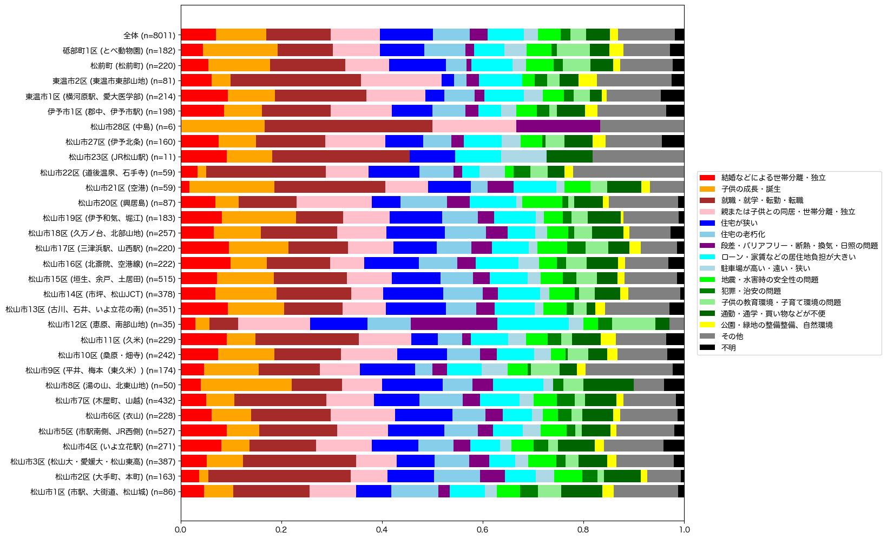

解説 16
各地域への転入理由を図1に示します。 暖色系がライフイベントを表し、青色系が住居の問題、緑/黄色系が地域の問題を表す。 結婚などによる世帯分離・独立は、郊外部で若干高く、中心部・中山間地域で若干低い傾向があります。 砥部町や空港周辺、堀江、湯の山周辺では、子供の成長・誕生に伴う転入が多いです。 松山市2区 (大手町、本町、味酒), 3区 (愛媛大、松山東高、祝谷), 11区 (久米、南土居、高井), 21区 (空港), 22区 (道後温泉、石手寺)など中心部に近い地域では、就職・就学・転勤・転職による転入が多く、子供の成長・誕生による転入は少ないです。 住居と地域の問題は、地域による大きな違いは見られません。

図1：他地域からの転入理由